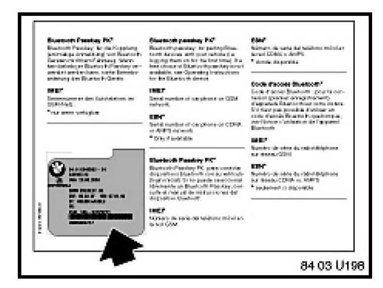

BMW Assist(R) - Vehicle Dials BMW Assist(R) on It's Own
SI B 84 49 06Communication Systems
October 2007
Technical Service
This Service Information bulletin supersedes S.I. B84 49 06 dated October 2006.
[NEW] designates changes to this revision
SUBJECT
Vehicle Dials BMW Assist on its Own
MODEL
E46 (3 Series) from 09/03 production with Premium Package (ZPP) or BMW Assist (SA 639)
E53 (X5) from 10/03 production with Premium Package (ZPP) or BMW Assist (SA 639)
E60, E61 (5 Series)
E63, E64 (6 Series)
E65, E66 (7 Series)
E70 (X5) with Premium Package (ZPP) or BMW Assist (SA 639)
E83 (X3) from 09/03 production with Premium Package (ZPP) or BMW Assist (SA 639)
E85, E86 (Z4) from 10/03 production with Premium Package (ZPP) or BMW Assist (SA 639)
E90, E91, E92, E93 (3 Series) with Premium Package (ZPP) or BMW Assist (SA 639)
SITUATION
The customer states that the vehicle dials BMW Assist(R) on its own, without input from the customer.
CAUSE
1. Emergency call switch fails or sticks.
2. Wiring shorted.
3. TCU hardware failure.
4. The customer presses the MFL Telephone (send/end) button on the steering wheel. The last number dialed is redialed (vehicles prior to 3/2004).
5. One or more of the following faults may be stored in the TCU:
0C74: Emergency call button jammed (I/K-bus vehicles only)
0X6D: Emergency call button, open circuit (I/K-bus vehicles only)
0X80: Service button, open circuit (I/K-bus vehicles only)
0X81: Service call button jammed (I/K-bus vehicles only)
A370: Emergency call button - Shorted to B+ (MOST-bus vehicles only)
A36D: Emergency call button - Open circuit (MOST-bus vehicles only)
A374: Emergency call button jammed (MOST-bus vehicles only)
PROCEDURE FOR E46 (NON CONVERTIBLE), E53, E65, E66, E83, E85 & E86 VEHICLES
1. Duplicate customer complaint. Can the complaint be duplicated?
- Yes, disconnect the SOS switch. If the system stops calling BMW Assist, proceed to step 11.
- No, proceed to step 2.
2. Perform a short test using the BMW Diagnostic Tools.
3. Does the TCU have one of the below listed faults stored in fault memory the TCU?
0C74: Emergency call button jammed
0X6D: Emergency call button, open circuit
0X80: Service button, open circuit
0X81: Service call button jammed
A370: Emergency call button - Shorted to B+ (MOST-bus vehicles only)
A36D: Emergency call button - Open circuit (MOST-bus vehicles only)
A374: Emergency call button jammed (MOST-bus vehicles only)
- If Yes, complete the test module for that fault. If the test module states to replace the TCU, refer to the TCU replacement Procedure in this bulletin.
- No, Proceed to step 4.
4. Check the BMW Assist account status on DCSnet. The BMW Assist services expiration date and the TCU activation status can be checked on DCSnet under Service/Vehicle History Inquiry. Refer to SI B02 01 06 (Updated DCSnet Vehicle History Inquiry information on BMW Assist) for more information.
- If the customer has an active BMW Assist services account, test the BMW Assist services following the information outlined in 'Testing of BMW Assist Services' section of this bulletin.
5. [NEW] On E46, E53, E83, E85 and E86 vehicles, check the operation of the emergency call switches (roadside and emergency). The status can be monitored via DISPlus/GT1 Control Module function for TCU (Telematics Control Unit). The status should change when the buttons are press.
6. Disconnect the 6-pin connector SOS switch and measure the voltage at the following pins and ground.
- Pin 4 (SOS)
- On vehicles equipped with both a SOS and a Roadside (wrench) assistance buttons, check pin 1 (Roadside)
- There should be approximately 12 volts. If the readings are not the same for both buttons on the switch (for example roadside= 12.00 volts and emergency=9.5 volts) proceed to step 7.
7. Disconnect the 54-pin TCU ELO connector and connect adapter cable (90 88 6 630 400) only to the wiring harness and to the 88-pin breakout box (88 88 6 614 410). Do not connect the TCU to the breakout box.
- Check for continuity between pin [NEW] 4 of the SOS switch connector and pin 31 of the 54-pin TCU connector.
- On vehicles equipped with both a SOS and a Roadside assistance (wrench) buttons, check for continuity between pin 1 of the SOS switch connector and pin 26 of the 54-pin TCU connector.
- If you have continuity, proceed to the step 8.
- If you do NOT have continuity, repair wiring as necessary.
8. Check all the wiring between the switch and the TCU for opens and shorts. If the wiring check is good, then proceed to step 9.
9. Reconnect the switch that was previously disconnected and check the resistance of each circuit as outlined in steps 10 and 11.
10. On vehicles equipped with both a SOS and a Roadside assistance (wrench) buttons, check the resistance from pin 26 of the 54-pin TCU connector to ground.
- Switch not pressed: circuit open.
- Switch pressed: circuit shows 100-200 ohms.
11. Check the resistance of pin 31 of the 54-pin TCU connector to ground.
- Switch not pressed: circuit open.
- Switch pressed: circuit shows 100-200 ohms.
If the wiring and switch are good, the TCU should be replaced. Proceed to the 'TCU REPLACEMENT PROCEDURE'. If the switch resistance is not correct, replace the switch.
PROCEDURE FOR E46 CONVERTIBLE VEHICLES
1. Duplicate customer complaint. Can the complaint be duplicated?
- Yes, disconnect the SOS switch. If the system stops calling BMW Assist, proceed to step 11.
- No, proceed to step 2.
2. Perform a short test using the BMW Diagnostic Tools.
3. Does the TCU have one of the below listed faults stored in fault memory the TCU?
0C74 Emergency call button jammed
0X6D Emergency call button, open circuit
0X80 Service button, open circuit
0X81 Service call button jammed
- IF yes, complete the test module for that fault. If the test module states to replace the TCU, refer to the TCU replacement Procedure in this bulletin.
- GIF no, Proceed to step 4.
4. Check the BMW Assist account status on DCSnet. The BMW Assist services expiration date and the TCU activation status can be checked on DCSnet under Service/Vehicle History Inquiry. Refer to SI B02 01 06 (Updated DCSnet Vehicle History Inquiry information on BMW Assist) for more information.
- If the customer has an active BMW Assist services account, test the BMW Assist services following the information outlined in 'TCU REPLACEMENT PROCEDURE' section of this bulletin.
5. Check the operation of the emergency call switches (roadside and emergency). The status can be monitored via DISPlus/GT1 Control Module function for TCU (Telematics Control Unit). The status should change when the buttons are press.
6. Disconnect the 10-pin connector at the mirror and measure the voltage at the following pins and ground.
- Pin 7 (SOS)
- Pin 4 (Roadside)
There should be approximately 12 volts. If the readings are not the same for both buttons on the switch (for example roadside= 12.00 volts and emergency=9.5 volts) proceed to step 7.
7. Disconnect the 54-pin TCU ELO connector and connect adapter cable (90 88 6 630 400) to the wiring harness only and to the 88-pin breakout box (88 88 6 614 410). Do not connect the TCU to the breakoutbox.
- Check for continuity between pin 7 of the 10-pin mirror connector and pin 31 of the 54-pin TCU connector.
- Check for continuity between pin 4 of the 10-pin mirror connector and pin 26 of the 54-pin TCU connector.
- If you have continuity, proceed to the step 8.
- If you do NOT have continuity, repair wiring as necessary.
8. Check all the wiring between the switch and the TCU for opens and shorts. If the wiring check is good, then proceed to step 9.
9. Reconnect the switch that was previously disconnected and check the resistance of each circuit as outlined in steps 10 and 11.
10. Check the resistance from pin 26 of the 54-pin TCU connector to ground.
- Switch not pressed: circuit open.
- Switch pressed: circuit shows 100-200 ohms.
11. Check the resistance of pin 31 of the 54-pin TCU connector to ground.
- Switch not pressed: circuit open.
- Switch pressed: circuit shows 100-200 ohms.
If the wiring and switch are good, the TCU should be replaced. Proceed to the 'TCU REPLACEMENT PROCEDURE'.
If the switch resistance is not correct, replace the switch.
PROCEDURE FOR E70, E90, E91, E92 & E93 VEHICLES
1. Duplicate customer complaint. Can the complaint be duplicated?
- If yes, disconnect the Roof Function Center (FZD). If the system stops calling BMW Assist, proceed to step 11.
- If no, proceed to step 2.
2. Perform a short test using the DISplus or GT1.
3. Does the TCU have one of the below listed faults stored in fault memory the TCU?
A370 Emergency call button - Shorted to B+ (MOST-bus vehicles only)
A36D Emergency call button - Open circuit (MOST-bus vehicles only)
A374 Emergency call button jammed (MOST-bus vehicles only)
- If yes, complete the test module for that fault. If the test module states to replace the TCU, refer to the TCU replacement Procedure in this bulletin.
- If no, Proceed to step 4.
4. Check the BMW Assist account status on DCSnet. The BMW Assist services expiration date and the TCU activation status can be checked on DCSnet under Service/Vehicle History Inquiry. Refer to SI B02 01 06 (Updated DCSnet Vehicle History Inquiry information on BMW Assist) for more information.
- If the customer has an active BMW Assist services account, test the BMW Assist services following the information outlined in '"TCU REPLACEMENT PROCEDURE' section of this bulletin.
5. Check the operation of the emergency call switches (roadside and emergency). The status can be monitored via DISPlus/GT1 Control Module function for TCU (Telematics Control Unit). The status should change when the buttons are press.
6. On E90, E91, E92 & E93 vehicles, disconnect the 14-pin connector at the FZD and measure the voltage at the following pins and ground.
- Pin 6 (SOS)
There should be approximately 12 volts. If the readings are not the same for both buttons on the switch (for example roadside= 12.00 volts and emergency=9.5 volts) proceed to step 8.
7. On E70 vehicles disconnect the 20-pin connector at the FZD and measure the voltage at the following pins and ground.
- Pin 17 (SOS)
- There should be approximately 12 volts. If the readings are not the same for both buttons on the switch (for example roadside= 12.00 volts and emergency=9.5 volts), proceed to step 8.
8. Disconnect the 54-pin TCU ELO connector and connect adapter cable (90 88 6 630 400) to the wiring harness only and to the 88-pin breakout box (88 88 6 614 410). Do not connect the TCU to the breakout box.
- On E90, E91, E92 & E93 vehicles, check for continuity between pin 6 (E70 pin 17) of the FZD connector and pin 31 of the 54-pin TCU connector.
- On E70 vehicles, check for continuity between pin 17 of the FZD connector and pin 31 of the 54- pin TCU connector.
- If you have continuity, proceed to step 9.
- If you do NOT have continuity, repair wiring as necessary.
9. Check all the wiring between the FZD and the TCU for opens and shorts. If the wiring check is good, then proceed to step 11.
10. Reconnect the FZD that was previously disconnected and check the resistance of each circuit as outlined in steps 11.
11. Check the resistance of pin 31 of the 54-pin TCU connector to ground.
- Switch not pressed: circuit open.
- Switch pressed: circuit shows 100-200 ohms.
If the wiring and FZD are good, the TCU should be replaced. Proceed to the 'TCU REPLACEMENT PROCEDURE'.
If the switch resistance is not correct, replace the FZD.
TCU REPLACEMENT PROCEDURE
1. It is NOT necessary to obtain a Part Replacement Authorization (TeileClearing) for this specific issue. Refer to the Warranty section of this bulletin for more details. Additional information can be found in SI B84 23 05 (Enhanced Support for BMW Assist Telematics Control Unit (TCU) with Bluetoothreg; & CPT9000 Phone Systems).
2. Refer to TIS (RA 84 11...) for the TCU replacement procedure.
3. Before installing the new TCU, remove one copy of the Electronic Serial Number (ESN) label and place it on the repair order for reference during warranty claim entry. You will be asked for the new TCU "ESN" when submitting a claim via DCSnet. Refer to SI B01 10 05 for more details.

4. The second ESN label of the TCU should be affixed over the existing label in the Owner's Manual insert (P/N 01 49 0 157 963).
5. Complete the TCU installation
6. Using Progman V27.01.00 or higher, program the complete vehicle. Refer to SI B09 05 01 "Coding, Individualization and Programming", Procedure A.
7. On E60, E61, E63, E64, E65 (from 3/05), E66 (from 3/05) E70, E90, E91, E92 and E93 vehicles:
Initialize BMW Assist following the procedure as outlined in the 'INITIALIZATION OF BMW ASSIST SERVICES" section of this bulletin.
8. Test BMW Assist by following the procedure outline in the "TEST OF BMW ASSIST SERVICES' section of this bulletin.
INITIALIZATION OF BMW ASSIST SERVICES ON E60, E61, E63, E64, E65 (FROM 3/05), E66 (FROM 3/05), E70, AND E90, E91, E92 AND E93 VEHICLES
1. The BMW Assist services initialization procedure must be completed per SI B84 15 03 for all vehicles.
- The vehicle must be in the Verizon Wireless Network for the initialization procedure to work properly. If the vehicle is not in the Verizon Wireless Network perform the outlined procedure and then follow these additional steps.
- Create a PuMA case to received TCU shipping authorization.
- Remove the TCU from the vehicle.
- Send via FedEx the TCU, BMW Assist TCU Reactivation Form with the new MIN/MDN numbers and a copy PuMA case to:
BMW of North America, LLC.
Attn: Body Electrical Technical Hotline
(TCU Reactivation B84 49 06)
1 BMW Plaza
Montvale, NJ 07645
- BMW of North America, LLC will initialize the TCU and ship it out on the same business day it was received.
- After receiving the TCU back from BMW of North America, reinstall the TCU and place a BMW Assist call as outlined in the 'Test of BMW Assist Services' section of this bulletin.
- All shipping charges (both ways) are to be billed to the dealer's Fed-Ex account. On the warranty claim, submit the Fed-Ex shipping charges (double the amount provided to you by Technical Hotline to cover shipment both ways) in the sublet section (using sublet code 4).
2. Test BMW Assist following the procedure outline in 'Test of BMW Assist Services' section of this bulletin.
TEST OF BMW ASSIST SERVICES
Test the BMW Assist service for proper operation by placing a test call (press the Roadside Assistance "Wrench" button). Make sure the BMW Assist Response Center has received the correct MIN/MDN/VIN and location of the vehicle. Have the representative update their records as needed.
- If a TCU is replaced on a vehicle with an inactive BMW Assist account, if a BMW Assist call is made, the call will be routed to an automated system until the TCU is deactivated.
- For customers who would like to renew BMW Assist services, refer to SI B84 22 05 (Reactivation of BMW Assist Services).
If the connection is established but voice communication is not established, call BMW Assist Customer Care immediately at (888) 333-6118, option #4, to cancel the dispatch. Failing to call will result in local emergency services being dispatched to your location.
WARRANTY INFORMATION
Covered under the terms of the BMW New Vehicle Limited Warranty.
Please refer to the latest KSD for all applicable labor operations and allowances.
If the appropriate labor operation is not contained in KSD, then a work time labor operation should be used.
Defect Code: 84 11 02 11 00
Part replacement authorization is NOT required. Do NOT submit a TeileClearing PuMA case. A copy of the diagnostic report (short test) which includes a copy of the test modules that were completed must be kept with the Repair Order (RO) and FASTA data must be transmitted. When submitting a warranty claim, please note the following information in the comments section:
- SI B84 49 06 (Vehicle Dials BMW Assist on its Own)

Disclaimer